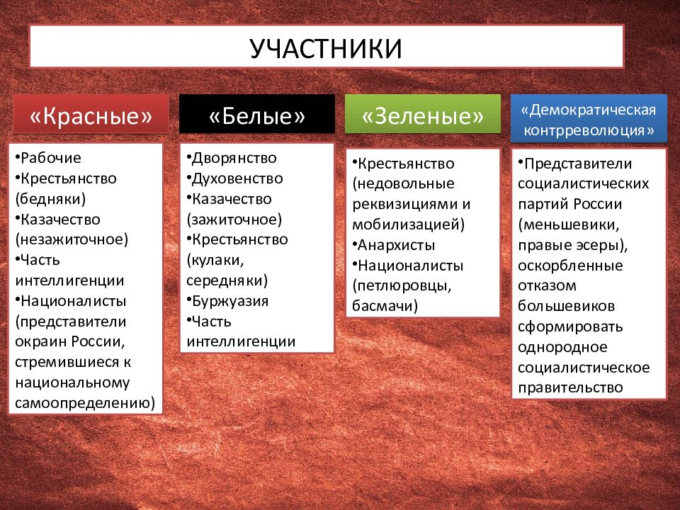

Стороны конфликта
-
Красная армия
Во главе Красной армии стоял Лев Троцкий. Это была армия большевиков, поддерживавших революцию и социалистические идеи. Красная армия сражалась против Белой армии и других контрреволюционных сил. Она стала основным военным орудием Советской власти в годы Гражданской войны. -
Белая армия
Белую армию возглавляли различные военные лидеры, среди которых можно выделить Антона Деникина, Петра Врангеля и других генералов, поддерживавших старую империю. Белая армия стремилась восстановить монархию или создать республику, в которой не было бы социалистической власти. -
Украинская армия
Украинская армия, или Армия УНР, воевала за независимость Украины и против Советской власти. Главнокомандующими были Михаил Грушевский и Симон Петлюра. Армия УНР была одной из важных сторон конфликта на территории Украины. -
Армия Колчака
Армия, созданная Александром Колчаком, известная как Армия Колчака, пыталась установить диктатуру на территории Сибири и Урала. Колчак был признан верховным правителем России в 1918 году и возглавил военные действия против большевиков на Востоке страны. -
Антанта
Страны Антанты (включая Великобританию, Францию, США) оказывали поддержку белым, надеясь на сохранение антибольшевистских режимов. Вмешательство Антанты стало одним из факторов, оказавших влияние на ход войны.
